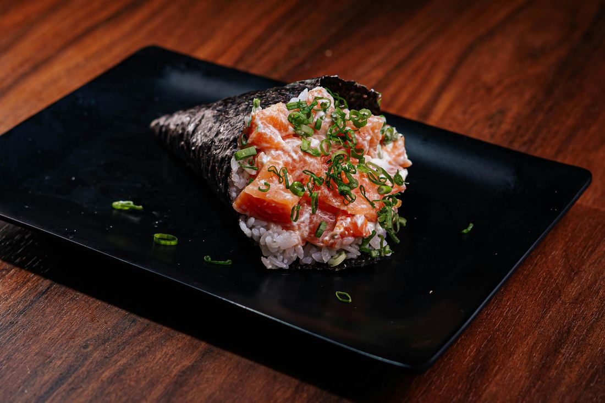

enrolado na hora, comido sem pressa.
Alga crocante, arroz no ponto e recheio generoso.
Escolha no cardápio e peça pelo WhatsApp.
temaki é ritual.
Na Akira Rolls, cada cone é enrolado depois do seu pedido: alga crocante, arroz no ponto e recheio generoso.
Sem pressa na mesa e sem fila na cozinha. Peça pelo WhatsApp e retire no balcão ou receba em casa.

a casa em três ideias.
Fresco
Ingredientes escolhidos no dia, sem estoque parado.
Feito à mão
Cada temaki é enrolado depois que o pedido chega.
Noite
Aberto quando bate a vontade de sushi.
como pedir.
- Escolha seus itens no cardápio.
- Revise o pedido e envie pelo WhatsApp.
- Confirme o valor e a forma de pagamento.
- Retire no balcão ou receba em casa.
dúvidas.
Qual o horário de funcionamento?
Terça a domingo, das 18h às 23h.
Vocês entregam?
Sim, pelo WhatsApp. Confirmamos a taxa e o prazo de acordo com o endereço.
Posso encomendar para festas?
Pode. Chame no WhatsApp com a data e o número de pessoas.
Tem opção sem peixe cru?
Tem: hot rolls, pratos quentes e temakis vegetarianos. Veja no cardápio.
venha comer com a gente.
- Endereço
- Rua Exemplo, 000 - Centro
Carlos Barbosa - RS - Funcionamento
- Terça a domingo, das 18h às 23h
- Pedidos e reservas
- WhatsApp: (00) 00000-0000
- Instagram: @akirarolls